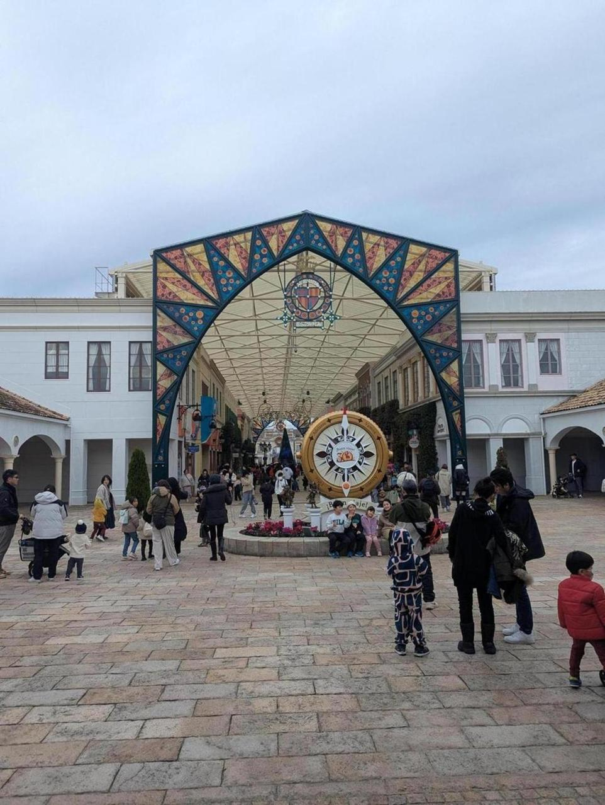
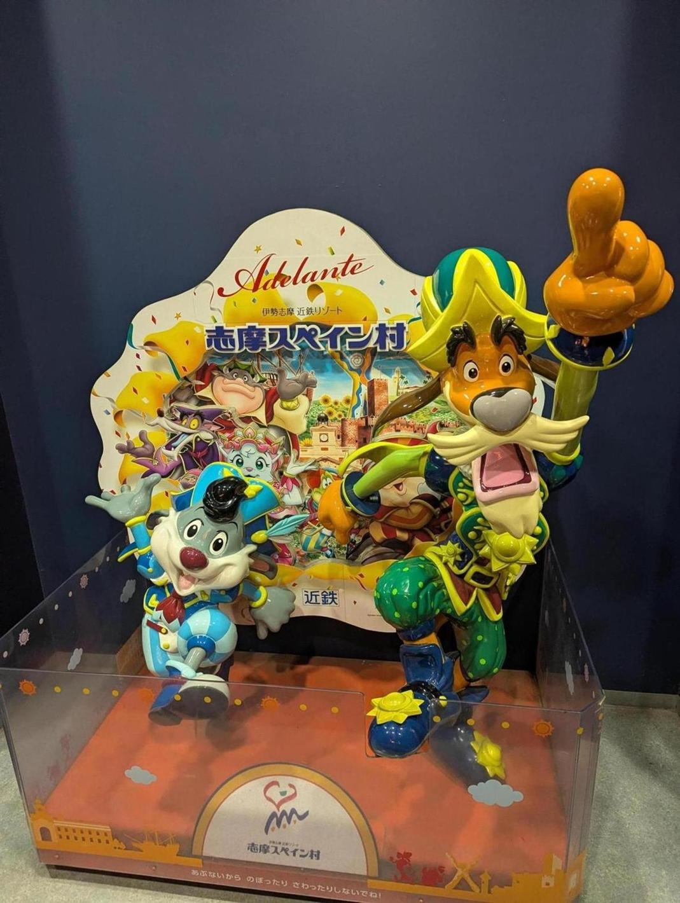

伊勢旅行の2日目。志摩スペイン村という地方都市っぽい遊園地に来た。アトラクションがけっこう怖い。
志摩スペイン村は遊園地というよりテーマパークで、要するにディズニー的な感じだ。キャラクターグリーティングとかがあるし、世界観が表現されている。

スペイン村のキャラクターは400年前のスペインで暮らしていたが、亜空間の繋ぎ目を通ったらちょうどこのスペイン村に通じていたというストーリーがあるらしい。
アトラクションがめっちゃ楽しくて、並ぶ時間も長くて15分とか。食事も安くて美味いし、すごく良かった。ディズニーランドとかと比べるともちろんクオリティは低いんだけど、総合的な満足度でいうと大して変わらないんじゃないか？と感じた。人が少ないことはそれだけで価値がある。
泊まったのはアマネムというアマンリゾート。すごく良かった。ご飯がめちゃくちゃ美味い。ネタバレしたくないので写真も載せないでおく。おすすめ。